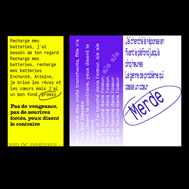

Identité visuelle
L'identité visuelle a pour objectifs de permettre la reconnaissance de la marque, de véhiculer ses valeurs et de conforter son image de marque. J'aimerai plus tard travailler autour de cette notion de marque, d'identité dans la mode.
Read MoreIllustration
J'aime l'illustration, colorée, sensible, impactante. J’aime tester, expérimenter, rechercher et donc ne pas me cantonner à un style illustratif précis.
Read More

Typographie
Présente dans l'édition, l'identité, elle est le centre du design graphisme et constitut l'un des piliers sur lesquels je veux me consacrer en master
Read More